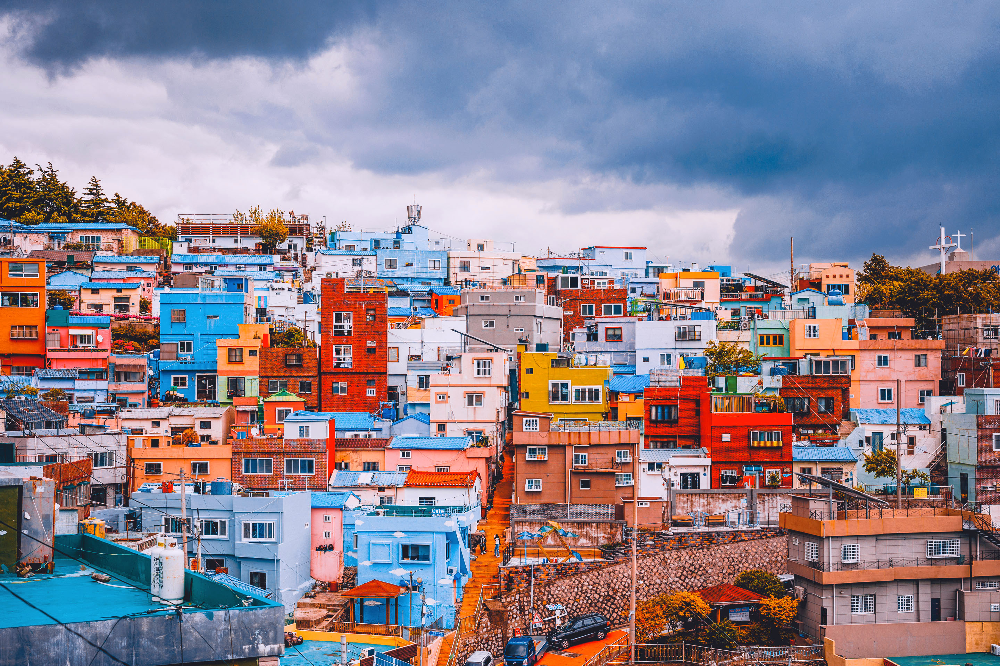
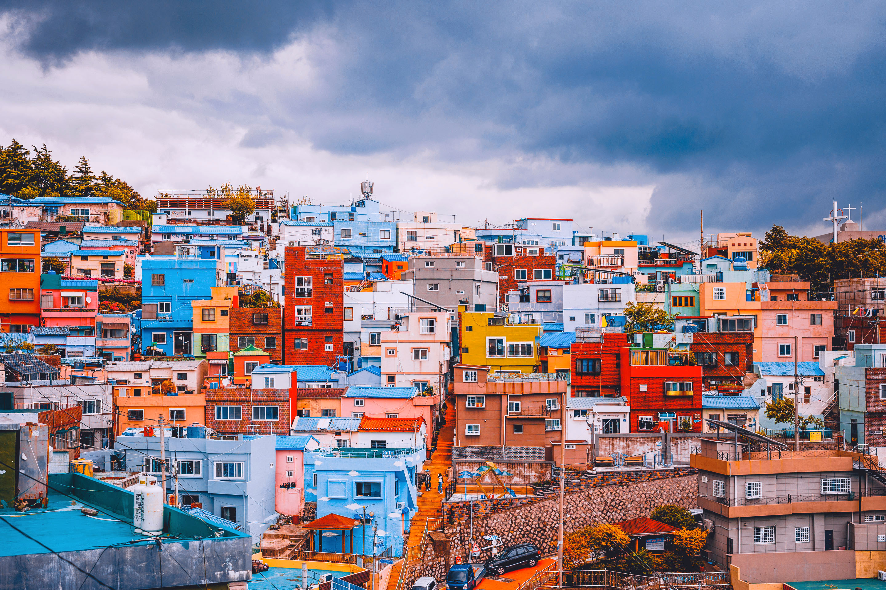

감천문화마을 소개
✨감천문화마을은 1950년대 6.25 피난민의 힘겨운 삶의 터전으로 시작되어 현재에 이르기까지 민족현대사의 한 단면과 흔적인 부산의 역사를 그대로 간직하고 있는 곳입니다. 산자락을 따라 질서정연하게 늘어선 계단식 집단 주거형태와 모든 길이 통하는 미로미로 골목길의 경관은 감천만의 독특함을 보여줍니다.
✨감천의 이런 특색과 역사적 가치를 살리기 위해 지역 예술인들과 마을 주민들이 모여 시작한 마을미술 프로젝트는 감천문화마을 만들기 사업의 디딤돌이 되었으며 이 사업을 시작으로 각종 공모사업을 유치하여 2019년에는 308만여명이 방문하는 명소가 되었습니다.
감천문화마을의 상징 어린왕자
감천문화마을의 가장 핫한 포토존인 어린왕자동상
어린왕자의 순수한 삶과 우정을 기리기 위해 사람들은
어린왕자의 전생에서 가장 잘나가던 시절의
멋진모습의 동상을 세웠고,
그의 친구 감천고양이도 여우로
승격시켜 어린왕자 옆 세웠다고 한다.
문화마을이 내려다 보이는 하늘마루
하늘마루는 용두산을 포함한 부산항과 감천항을
함께 바라볼 수 있는 확 트인 전망을 가지고 있으며,
감천문화마을과 관련된 자료들을 전시하는
안내관이자 전망대로써,
마을 주민이 거주하던 집의 원형을
그대로 보존하면서 재생하는 방식으로 설계되었습니다.
마을의 갤러리 공방 감내어울터
부산시에서 2011년부터 진행한
[산복도로 르네상스 프로젝트] 사업의 결과물로서
"건강탕"이라는 이름으로 운영되었던
옛 목욕탕의 노후화된 건물을 전체 리모델링하여
지역주민을 위한 커뮤니티 공간, 갤러리,
게스트하우스, 공방으로 활용하고 있습니다.